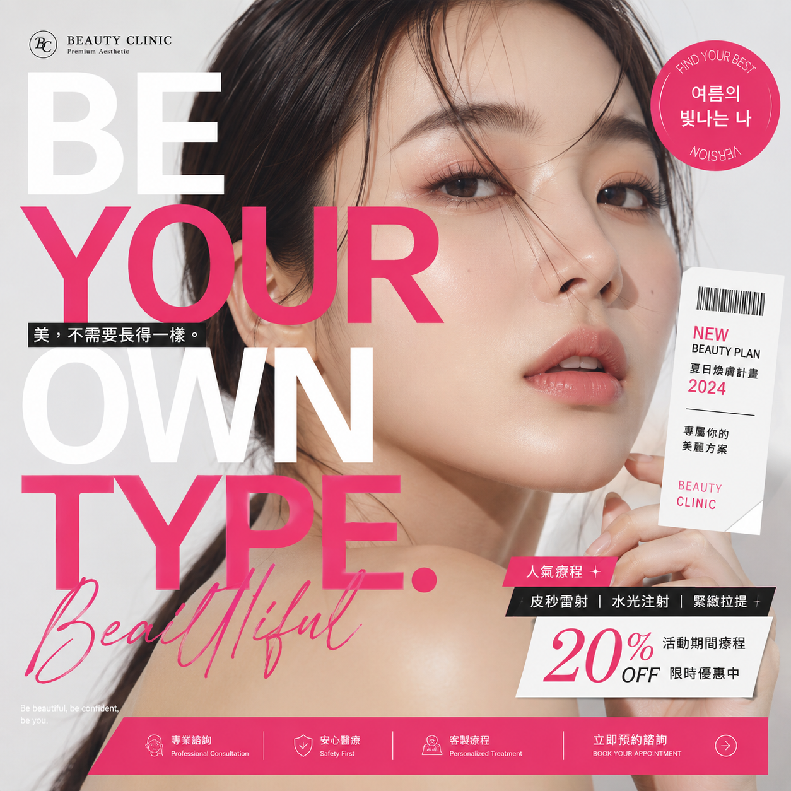
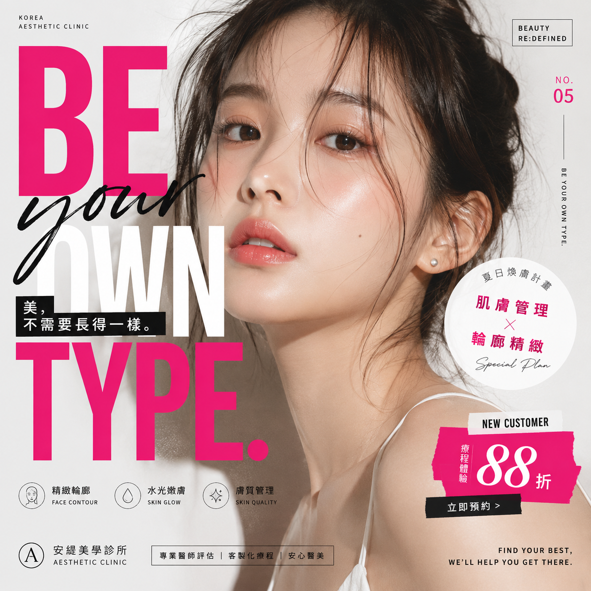
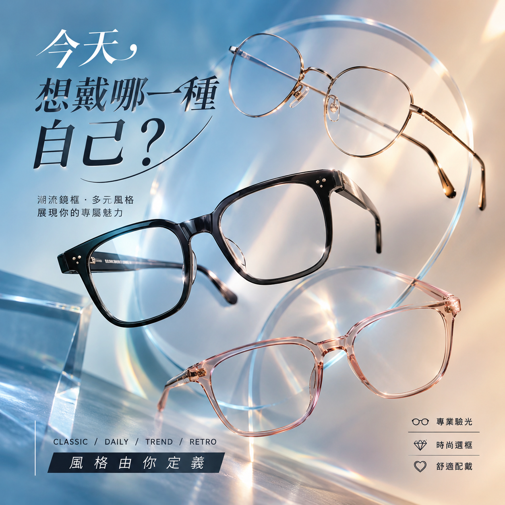

情境
這是什麼工作？給誰看？在哪裡使用？
AI 實戰工作坊 · PROMPT × SKILL
把模糊想法說清楚，把成功方法留下來。
不需要程式背景｜真實案例 × 動態拆解 × 工作應用
今天不是學一串神奇指令
先回答一個問題
只說一句話時
人物、色彩、構圖、資訊層級都沒有被指定，因此結果容易落入「什麼都有、但沒有品牌個性」。
PROMPT 不是關鍵字
說得越清楚，AI 就越不需要猜。
真實 A／B 圖片實驗
一份好 Prompt 的四個決定
這是什麼工作？給誰看？在哪裡使用？
要產出什麼？最重要的目的只有哪一個？
風格、重點、限制，以及什麼不能出現。
尺寸、結構、數量，以及最後如何交付。
現場組裝一份 Prompt
為一家主打科技專業的醫美診所，製作社群廣告。
以肌膚檢測為核心，讓觀眾感到可信任並想預約。
冰藍玻璃、乾淨人像、掃描介面；避免可愛與雜亂。
正方形構圖，保留標題、療程與行動按鈕區域。
產業案例 01｜醫美業
它可以決定品牌究竟是自然、精品、潮流，還是專業實驗室。


產業案例 02｜眼鏡業

但每次都重寫 Prompt，還不夠
PROMPT × SKILL
帶回工作的四個入口
從逐字稿整理決策、負責人與下一步。
保存品牌語氣、文章結構與禁用表達。
把資料轉成故事線、頁面角色與視覺節奏。
固定分類、摘要、比較與品質檢查方式。
你的第一個 AI 工作實驗
先寫出情境、任務、標準、格式，再讓 AI 開始。成果可用後，把成功方法保存下來。
START WITH ONE REAL TASK
會問只是開始；真正的能力，是讓好結果可以再次發生。